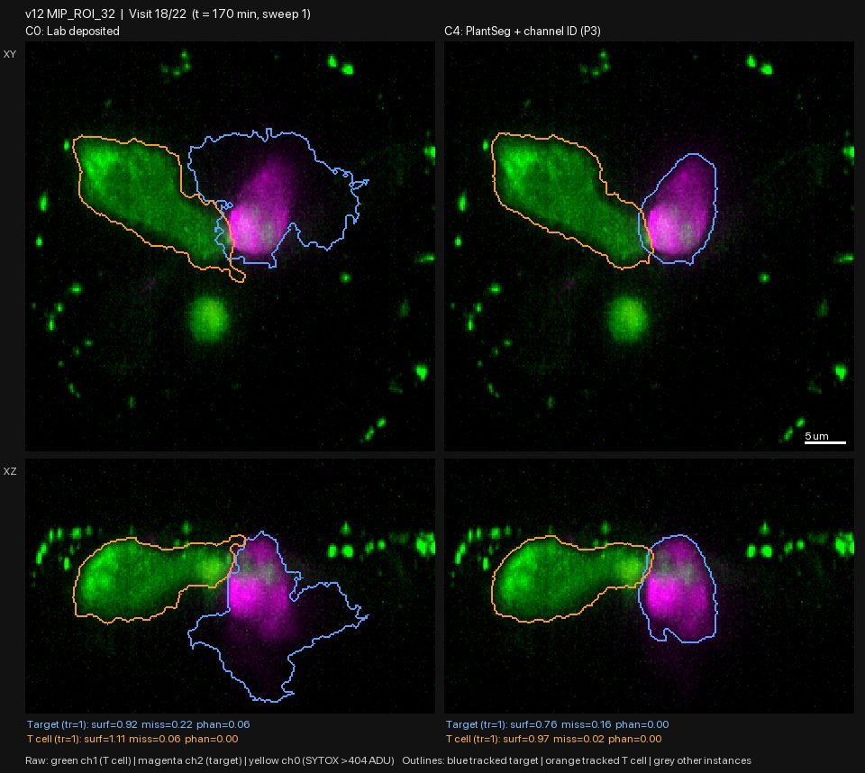
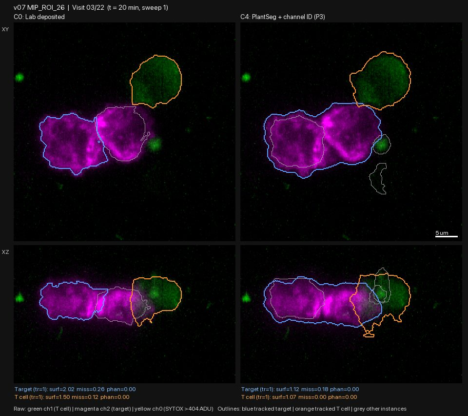
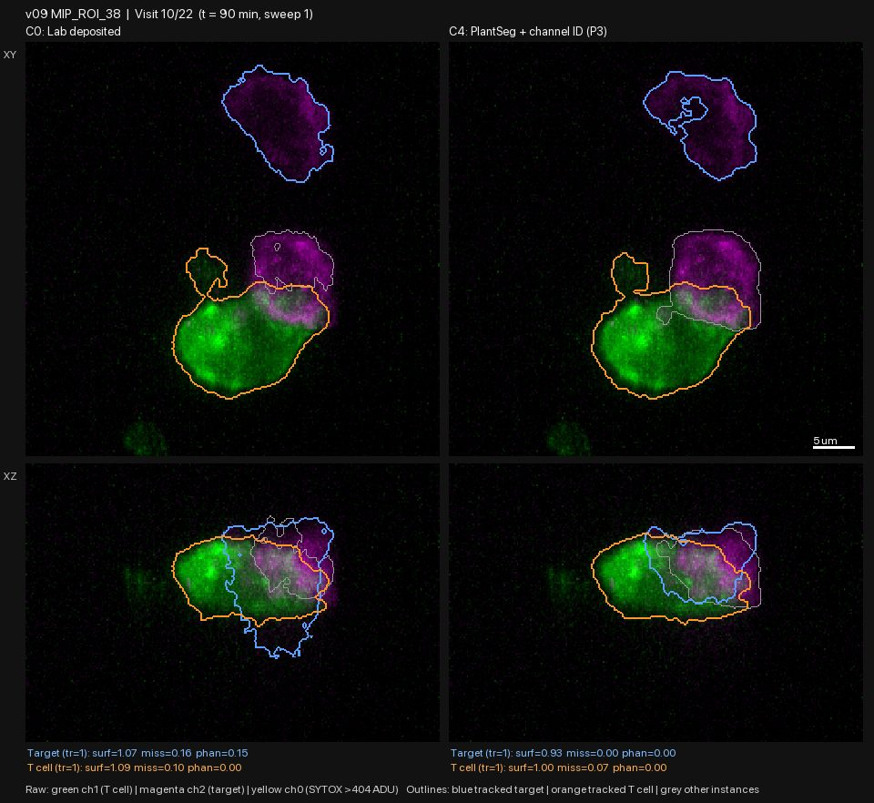
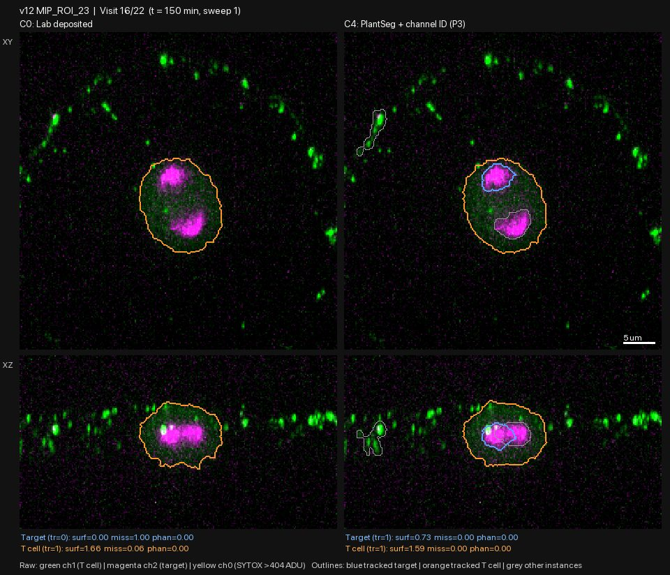
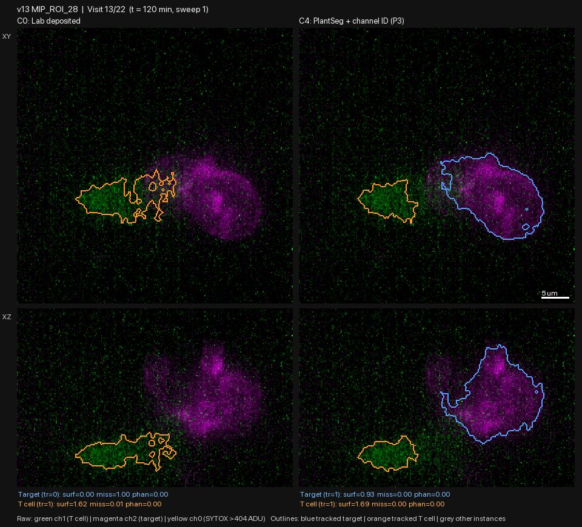

Held-out test P4: C4 outlines hold up on 12 new chambers; merging and target choice do not
| ID | 2026-10-29-03-held-out-test-p4-c4-outlines-generalise-tar | Date | 2026-10-29 |
|---|---|---|---|
| Gate | G1 | Status | reviewed |
| Author | claude | Reviewers | claude |
| Signoff | — | Commits | 7756ed0 |
| Datasets | raw_volumes, lab_masks | Protocols | gallery-review@v1 |
| Galleries | — | Supersedes / By | — / — |
Question
C4 was tuned on the 8 pilot chambers. Does it work, unchanged, on chambers it has never seen? The test set is 12 chambers from experiments v06-v13, including 4 dasatinib-treated chambers (the "ds" experiments v11-v13) and two chambers of donor hd10, whose lab masks are mostly hollow.
What was run
C0 (lab masks) and C4 (unchanged) on sweep 1 of every visit (259 images), run by agy
(Argon High); report .agy_pilot4_report.md. Outputs:
- data/pilot_seg/pilot4_metrics.csv and data/pilot_seg/p4_death_timeline.csv;
- figures/pilot/p4/*.mp4 and figures/pilot/p4/frames/.
Checks agy made, which I spot-checked against the code and data: - Every chamber has the same image grid and voxel size (0.1962 µm). - No crashes. - "ds" means dasatinib-treated, consistent with src/death_labels.py:201-203.
agy also reported that every chamber has the same channel order. The review below finds one chamber where that is in doubt.
What was looked at
All 259 frames (lab masks and C4 side by side), reviewed by Claude.
Observations
C4's outlines hold up on new data. In all 12 chambers C4 draws solid outlines that follow the cells. It has none of the lab masks' hollow rings or lobes hanging into empty space below the cells. The lab masks have those lobes in most visits of: - v09 ROI 38; - v11 ROI 15; - v12 ROI 32; - v13 ROI 28.
The two hd10 chambers, where the lab masks are hollow, are outlined solidly by C4.

The same two known failures, now in most chambers:
- Touching tumour cells merge into one target, in 5 of 12 chambers:
- v07 ROI 2 (visits 1-3);
- v07 ROI 26 (visits 1-8; the lab masks separate them);
- v09 ROI 29;
- v11 ROI 15 (visits 1-4);
- v13 ROI 28 (most visits; faint, large tumour cells).

- The wrong cell is chosen as the target or T cell, at least some of the time in most chambers:
- In v09 ROI 38 the blue "target" is often a tumour cell far from the T cell while the one it touches is grey.
- In v12 ROI 32 (visits 1-4) the orange "T cell" is a small dim object, not the T cell.
- In v10 ROI 28 (visits 15-19) the target switches between the two tumour cells the T cell touches.
This is the tracking problem from P3. It now matters more than outline quality.

New observations:
- v12 ROI 23 may not contain a tumour cell.
- The magenta signal sits inside a green cell. From visit 16 it splits into two blobs, and by visit 19 the green cell has divided.
- It looks like a dividing cell, with the target channel showing something inside it rather than a tumour cell membrane.
- The lab masks agree there is no target from visit 8 on. C4 calls the inner magenta a target.
- agy's channel check missed this. Open question: what is the magenta signal here?

-
C4 also outlines things that are not cells. It outlines faint background haze (v10 ROI 28, lower left in most visits) and the bright beads along the chamber wall (v12 ROI 23 and v12 ROI 32). These are grey "other" objects, so they do not affect the tracked pair, but they would add false cells to any cell count.
-
Faint dasatinib chambers are the hardest. v11 ROI 15 and v13 ROI 28 have dim, large tumour cells. Both methods struggle there; C4's merges are most common in them.

Per-chamber verdict (C4):
| Verdict | Chambers |
|---|---|
| Good | v08 ROI 24 |
| Good outlines, wrong cell chosen at times | v08 ROI 38, v09 ROI 38, v10 ROI 28, v12 ROI 32 |
| Merges touching tumour cells | v07 ROI 2, v07 ROI 26 |
| Poor | v06 ROI 28 (crowded, many dead cells), v09 ROI 29, v11 ROI 15, v13 ROI 28 |
| Unclear what the cells are | v12 ROI 23 |
Decision
- C4 is kept as the outline method. Its outline quality was not just tuned to the pilot chambers.
- C4 is not yet usable for measurements. The next round (P5) fixes the two failures that now dominate, and is tested on all 20 chambers:
- Choose and track the right cells: the T cell is the large green cell that persists over time, and the target is the tumour cell it touches, followed through to death.
- Separate touching tumour cells, using the membrane signal between them.
- Ignore non-cell objects (background haze, wall beads) by size and shape.
Open issues
- v12 ROI 23: what is the magenta signal inside the dividing green cell? Check the other sweeps and the raw intensity, and ask the Fei lab if unclear.